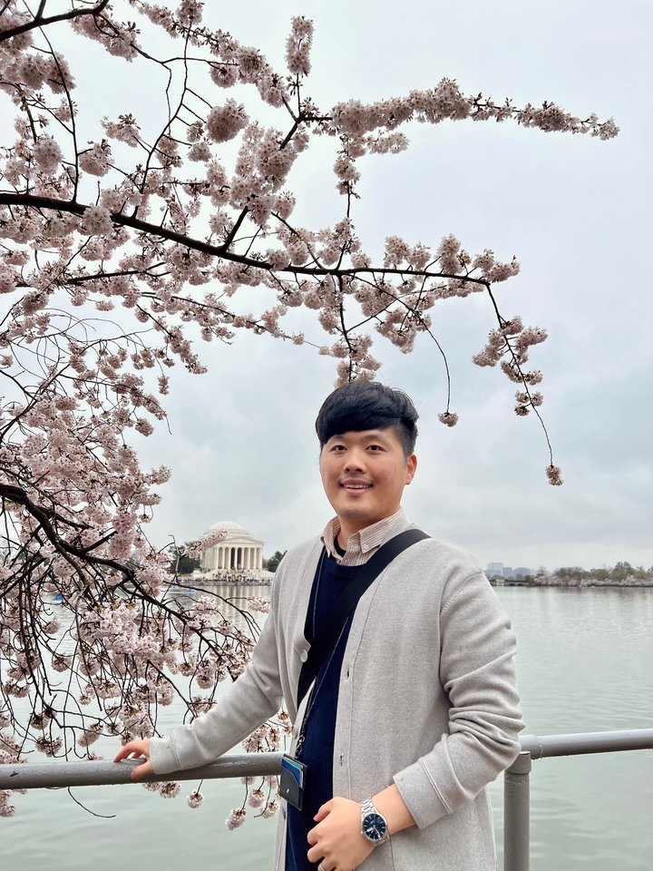

Assistant Professor
Gyeong Taek Lee
Mechanical, Smart & Industrial Engineering
Smart Factory Major, Gachon University, Seongnam, South Korea
I build models that watch manufacturing processes drift out of control before they fail — virtual metrology, fault detection & classification, and reinforcement learning, tuned for the noisy, imbalanced signals real fabs produce.

Overview
Domain
Semiconductor manufacturing data science — virtual metrology, fault detection & classification, class‑imbalanced learning.
Method
Deep theoretical and practical grounding in machine learning, deep learning, and deep reinforcement learning.
Tools
Advanced R, intermediate Python, SAS, SQL.
Track record
Prize‑winning results across national data analysis contests in finance, insurance, semiconductor, and game domains.
Education
-
Present
Assistant Professor
-
2023
Visiting Post‑Doctoral Researcher
-
2022
Ph.D., Industrial Engineering
-
2016
B.A., Statistics